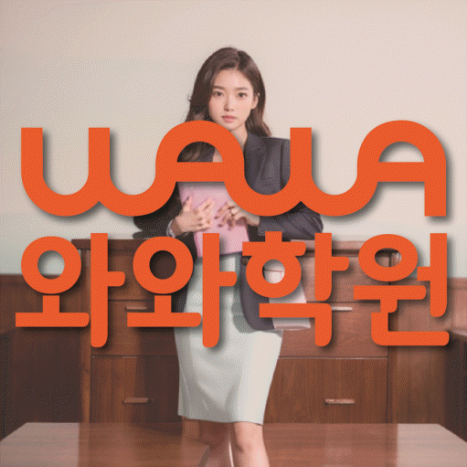

MIDDLE ENGLISH
성복동 중등 영어학원
성복동 중등 영어학원 선택 전 방학 학습 흐름을 설계하는 방법, 근거 독해와 고등 영어 전환 준비 진단, 학교 시험과 누적 독해 순서, 센터·가능 학년 확인 기준을 살펴보세요.
01 Quick answer
성복동 중등 영어: 방학 학습 흐름을 설계하는 방법
성복동 중등 영어의 이번 초점은 ‘방학 학습 흐름을 설계하는 방법’이며, 점수보다 확인 가능한 행동에서 시작합니다. 확인할 흔적: 평일의 실제 가능 시간과 방학에 늘릴 수 있는 시간을 구분하고 각각 지킨 기록을 확인하세요. 적용할 계획: 평일에는 끊기지 않을 최소 행동을, 방학에는 약점 보완 묶음을 정해 서로 다른 계획표에 적으세요. 변화 판단: 방학 계획을 확정하기 전 평일 기록에서 미완료 원인을 찾아 늘릴 분량과 유지할 분량을 나누세요. 학생이 직접 설명한 내용은 근거 독해와 고등 영어 전환 준비의 다음 주 분량을 정하는 근거가 됩니다.
확인 기준
성복동 학생의 근거 독해 설명과 고등 영어 전환 준비 풀이 흔적이 이어지는지 확인하고 센터 정보는 따로 기록합니다.


 010-6839-8283
010-6839-8283학습 답변 요약
핵심 주제는 ‘방학 학습 흐름을 설계하는 방법’입니다. 근거 독해와 고등 영어 전환 준비의 현재선을 확인하고 학습 우선순위와 문장 구조를 확인한 기록과 학교·센터 사실을 분리해 살펴봅니다.
성복동 중등 영어 첫 진단: 방학 학습 흐름을 설계하는 방법
성복동 중등 영어를 비교할 때는 ‘방학 학습 흐름을 설계하는 방법’부터 구체화합니다. 첫 질문은 ‘해석한 문장을 글의 주장과 연결하고 선택지 판단 근거를 찾는지’이며, 답은 성적표가 아니라 최근 영어 학습 자료에서 확인합니다.
‘중학교식 암기에서 고등 지문 분석으로 넘어갈 영어 기초가 연결되어 있는지’까지 확인한 뒤 두 답을 나란히 적고 학생 설명과 기록이 일치하는 영역부터 근거 독해와 고등 영어 전환 준비의 학습 순서를 잡습니다. 성복동의 ‘방학 학습 흐름을 설계하는 방법’은 방학 첫날의 기준선, 중간 점검일, 개학 전 확인일을 먼저 정한 뒤 각 날짜에 같은 형식의 자료를 남겨야 판단할 수 있습니다. 첫 기록에서 기준선을 표시하고 다음 점검일을 정하세요.
시험지에서 근거 독해와 고등 영어 전환 준비 자료를 남기는 방법
진단할 때는 ‘문단별 핵심 문장, 연결어 표시와 선택지를 지운 이유’와 ‘최근 시험지, 고등 수준 예시 지문과 일주일 학습 기록’이 보이는 자료만 고르고 처음 답의 이유와 수정한 이유를 나눠 지식 부족과 절차 문제를 구분하세요.
재확인표에는 ‘새 지문에서도 정답과 오답 선택지의 근거를 각각 짚는지’를 첫 질문으로, ‘무리한 선행보다 새 난도의 문장을 스스로 읽는 범위가 넓어졌는지’를 두 번째 질문으로 적습니다. 답을 학생이 혼자 설명해야 앞서 정한 초점의 다음 행동을 고를 수 있습니다.
시험 전후 근거 독해와 고등 영어 전환 준비의 비중을 조정하는 방법
시험 일정표에서 내신 범위와 누적 독해 약점을 다른 줄에 둡니다. 이어 ‘학교 본문 이해와 처음 보는 지문의 근거 찾기를 구분해 연습하는 기준’과 ‘중3 학교 일정과 입학 전 기초 보완을 나누는 기준’을 각 자료에 적용할지 판단하세요.
정해진 학교 범위와 처음 보는 지문에서 근거 독해와 고등 영어 전환 준비가 각각 어떻게 드러나는지 확인하세요. 자료별 완료 기준으로 시험 전후의 우선순위를 다시 세웁니다.
‘방학 학습 흐름을 설계하는 방법’을 시험 주간에 적용할 때는 근거 독해 점검일과 고등 영어 전환 준비 재확인일을 다른 줄에 적으세요. 이후 학생이 근거 독해와 고등 영어 전환 준비의 판단 과정을 각각 설명하게 하고 근거가 불분명한 쪽만 다시 계획합니다.
성복동 학교·학년 정보와 근거 독해 상담 질문을 나누는 법
내신 자료를 대조할 참고 학교에는 신봉중·성복중·홍천중 등이 적혀 있지만, 학생의 실제 학교와 시험 범위를 알려 자료 반영 가능 여부를 대조해야 합니다.
제공된 영어 학년 정보에는 중1·중2·중3 표기가 있어 학습 우선순위와 문장 구조를 실제 학습에 적용하는 방식과 시간표는 상담 시점에 다시 확인하세요. 페이지가 안내하는 센터명은 와와학습코칭센터 신봉점, 제공 주소는 경기 용인시 수지구 신봉2로 60 웰스톤시티엔웰스톤에비뉴 1동 103호 와와학습코칭학원입니다. 와와학습코칭센터 신봉점 학습 계획과 별도로 교습비와 시간표를 상담 시점에 다시 확인하고 제공 주소에서의 이동 시간을 계산합니다.
한 가지 병목부터 시작하는 근거 독해와 고등 영어 전환 준비 7일 점검
첫 주에는 ‘문단별 핵심 문장, 연결어 표시와 선택지를 지운 이유’에서 한 가지 병목만 고릅니다. 실행 항목은 ‘문단 역할을 한 줄로 요약하고 답을 지지하는 문장을 선택지와 연결하기’이며 새 교재나 추가 문제는 재확인 뒤에 결정하세요.
다음 점검 질문은 ‘새 지문에서도 정답과 오답 선택지의 근거를 각각 짚는지’입니다. 답이 불분명하면 ‘문단 역할을 한 줄로 요약하고 답을 지지하는 문장을 선택지와 연결하기’의 설명 단계를 보완하고, 분명하면 ‘어휘·문장 구조의 현재선을 확인한 뒤 고등 지문 한 편에 적용해 보기’를 다음 주 행동으로 정합니다. ‘방학 학습 흐름을 설계하는 방법’의 다음 점검 전에는 어휘·문장 구조·독해 중 한 병목만 다루고, 새 문제에서 같은 실수가 줄었을 때 다음 영역으로 넘어가세요.
고등 영어 전환 준비 재확인 질문과 센터 이용 조건을 나누는 방법
최근 시험지 한 장과 현재 교재를 준비하세요. 첫 질문은 ‘정답 수가 아니라 근거 문장을 찾는 과정을 어떻게 기록하는지’, 두 번째는 ‘선행 범위보다 고등 영어에서 혼자 수행할 수 있는 단계를 어떻게 확인하는지’입니다.
상담 뒤 학생이 근거 독해의 첫 행동을 설명하게 하세요. 고등 영어 전환 준비의 재확인 날짜와 센터 이용 조건은 서로 다른 칸에 적습니다.
- 학생 자료문단별 핵심 문장, 연결어 표시와 선택지를 지운 이유
- 시험 계획학교 범위표와 고등 영어 전환 준비 완료일·재확인일
- 재확인학습 우선순위 확인 날짜와 학생 설명 기록
- 이용 조건영어 가능 학년(중1·중2·중3)·시간표·교습비·통학 동선
02 Parent perspective
성복동 중등 영어 학부모 상담 상황
아래 성복동 중등 영어 상담 장면은 실제 이용 후기나 특정 학생의 성과가 아닌 준비용 가상 예시입니다. 학습 결과는 학생의 출발점과 실천 정도에 따라 달라질 수 있습니다.
내신 범위와 누적 학습이 겹친 성복동 가상 사례입니다. ‘방학 학습 흐름을 설계하는 방법’을 기준으로 근거 독해의 마감일과 고등 영어 전환 준비를 확인하는 최소 행동을 다른 줄에 둡니다.
성복동의 와와학습코칭센터 신봉점 상담을 준비하는 가상 장면입니다. 학부모는 영어 가능 학년(중1·중2·중3)과 실제 시간표를 확인하고 ‘해석 정답보다 문장 구조를 스스로 표시하는 과정을 어떻게 피드백하는지’를 별도 질문으로 남깁니다.
03 FAQ
성복동 중등 영어 자주 묻는 질문
학생 자료, 가능 학년과 실제 이용 조건을 나누어 답했습니다.
성복동 중등 영어에서 ‘방학 학습 흐름을 설계하는 방법’은 어떤 자료부터 확인하나요?
최근 자료에서 ‘문단별 핵심 문장, 연결어 표시와 선택지를 지운 이유’를 표시하고 ‘새 지문에서도 정답과 오답 선택지의 근거를 각각 짚는지’를 다음 점검 질문으로 씁니다. 그 답을 확인한 뒤 ‘문단 역할을 한 줄로 요약하고 답을 지지하는 문장을 선택지와 연결하기’를 첫 실행 항목으로 정하세요.
근거 독해와 고등 영어 전환 준비 진단 기록은 어떻게 나누나요?
진단표에는 ‘문단별 핵심 문장, 연결어 표시와 선택지를 지운 이유’와 ‘최근 시험지, 고등 수준 예시 지문과 일주일 학습 기록’을, 실행표에는 두 영역의 시작일과 확인일을 적어 역할을 나누세요.
학교 시험과 누적 독해에서 근거 독해와 고등 영어 전환 준비 비중은 어떻게 나누나요?
내신은 범위 자료와 마감일을, 누적 독해는 새 지문과 재확인일을 중심으로 기록합니다. 두 기록 모두 ‘학교 본문 이해와 처음 보는 지문의 근거 찾기를 구분해 연습하는 기준’과 ‘중3 학교 일정과 입학 전 기초 보완을 나누는 기준’을 확인 기준으로 사용하세요.
상담 전 학습 우선순위와 문장 구조를 확인하려면 어떤 자료를 가져가나요?
학습 우선순위의 ‘최근 시험지와 교재에서 학생 설명이 멈춘 위치, 다시 풀며 바꾼 근거’와 문장 구조의 ‘해석이 끊긴 문장에 표시한 주어·동사와 잘못 묶은 수식어’가 보이는 자료를 각각 한 곳씩 고르세요. 두 자료를 언제 다시 확인할지도 상담 메모에 적습니다.
성복동 중등 영어 상담에서 가능 학년과 참고 학교는 어떻게 확인하나요?
성복동 페이지의 제공 자료 기준 영어 가능 학년은 중1·중2·중3입니다. 이 표기와 현재 시간표가 일치하는지 상담에서 확인하세요. 참고 학교로 신봉중·성복중·홍천중 등이 기재돼 있습니다. 학교명 자체보다 학생의 범위표와 최근 시험지를 기준으로 자료 반영 가능 여부를 물어보세요.
04 Related
성복동 관련 학원·상담 페이지
같은 지역의 과목 조합과 학년 카테고리, 앞뒤 지역 안내를 함께 확인하세요.